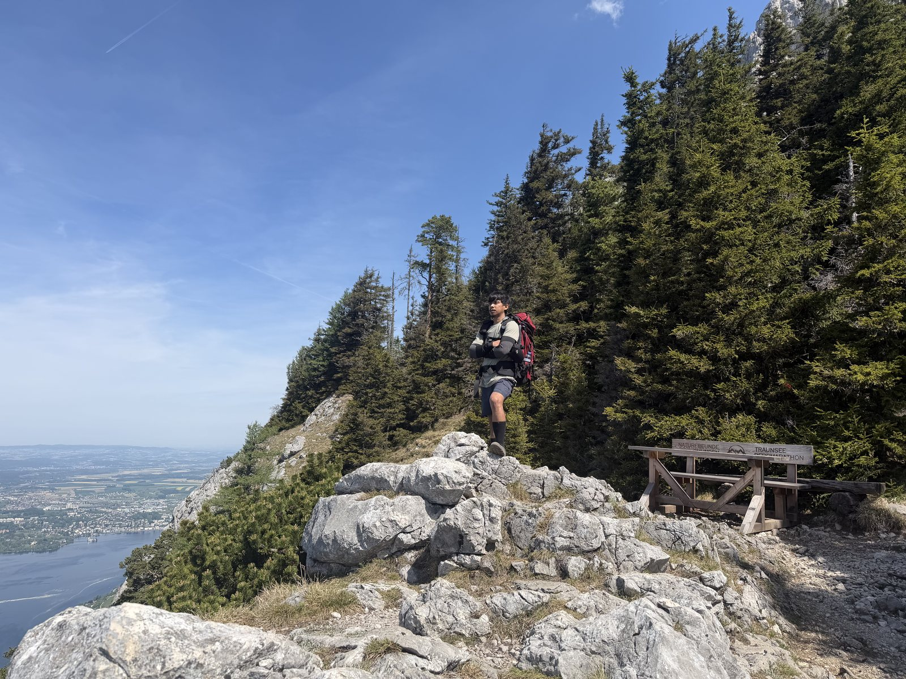
Blog / Hiking in the Salzkammergut, Austria
Traunstein: a mountain day above Traunsee
Up the Naturfreundesteig, down the Mairalmsteig, and ending with a swim in one of Austria's most beautiful lakes.
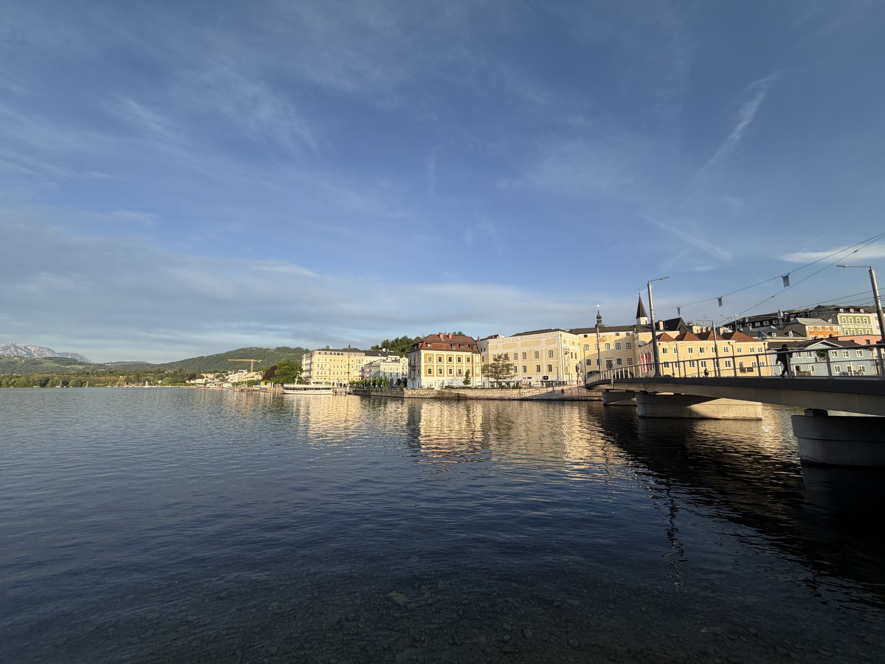
A day that had a little bit of everything
Some hiking days are memorable because of the summit. Others stay with you because of everything that happens along the way. Our day at Traunstein, above Gmunden in Austria's Salzkammergut region, gave us both: a demanding mountain trail, huge views over Traunsee, a welcoming mountain hut, a refreshing swim after the descent, and an unexpected act of kindness that made the journey back just as memorable as the hike itself.
Traunstein rises dramatically beside Traunsee, and from the lakeshore it is easy to understand why it attracts hikers. The mountain looks imposing, with steep limestone slopes dropping towards the water. It is beautiful, but it is not a casual walk. The routes involve sustained climbing, exposed ground and, in places, fixed cables or other mountain protections. A good level of fitness, sure footing and respect for changing mountain conditions are essential.
Getting to the trailhead: plan the transport first
Our hike started from Parkplatz Umkehrplatz on Traunsteinstraße, the access area used for the trails on this side of the mountain. It is a short drive from Gmunden, but getting there by public transport needs a little planning. The local shuttle and hiking-bus services do not necessarily run like an ordinary town bus, and their operating days, seasonal hours and reservation rules can differ.
We learned this the hard way on a Monday: the scheduled hiking bus was not running, and we ended up walking roughly six kilometres from Gmunden to the trail access. It became part of the adventure, but it is not something I would leave to chance next time. Check the timetable for your exact date, and reserve any on-demand shuttle ahead of time, especially if you want to start early.
Tip: Do not assume a bus shown on a general map operates every day or before sunrise. Confirm the date, first departure, stop name and booking deadline directly with the operator.
Salzkammergut Shuttle (official website)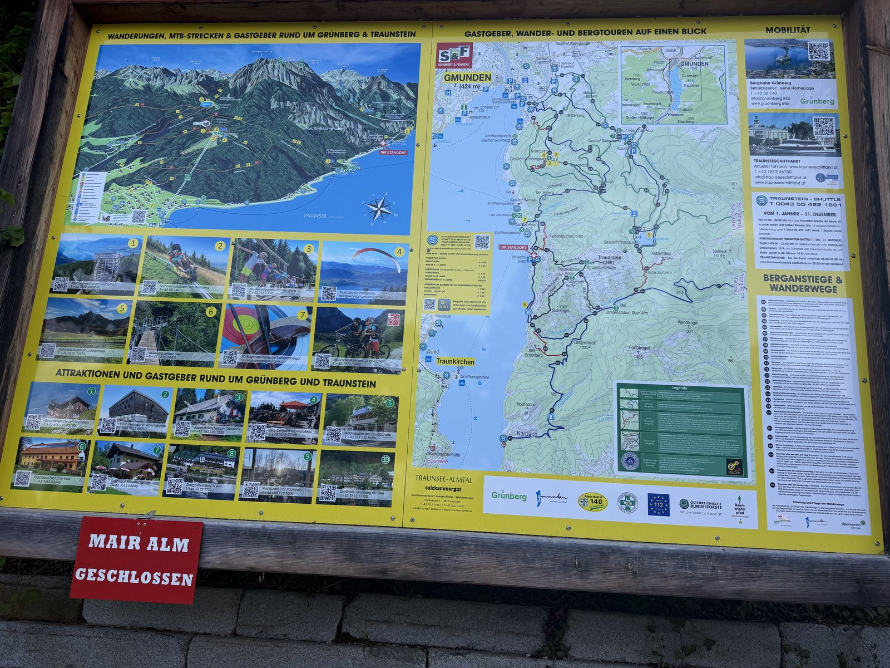
At the trail access, information boards help you understand the options. Before setting off, check the signs and your chosen route against an up-to-date map. The mountain has several established ways up, and choosing the right one matters.
Three main routes up Traunstein
There are three commonly used hiking routes to the Traunstein summit area. They differ in approach, steepness and exposure. The descriptions below are a practical overview, not a substitute for current official route information.
At-a-glance comparison
| Route | Official route-planner time | Ascent / elevation gain | General character |
|---|---|---|---|
| Naturfreundesteig Trail 414 | About 3 h to plateau; 5 h 22 min listed tour | 1,344 m | Very difficult; cables, ladder, short unsecured sections |
| Hernlersteig Trail 416 | About 2½–3 h ascent; 4 h 7 min listed tour | About 1,144–1,269 m (route/source dependent) | Difficult; exposed climbing; via-ferrata variant needs specialist kit |
| Mairalmsteig Trail 412 | About 4 h 15 min listed tour | 1,101 m | Medium in planner; forest approach, then steep chain-secured slabs |
Figures from the Traunsee-Almtal tourism board route pages. Times and heights vary with the start point and planner, so check the official pages before you go.
Trail 414
Naturfreundesteig
The classic, dramatic climb
Naturfreundesteig is a steep and scenic ascent through forest and limestone terrain. Higher up, the route becomes more exposed and includes fixed cables, footholds and an iron ladder, as well as short sections that are not secured. A striking rock passage is one of the memorable features of the climb before the route reaches the hut and summit plateau area.
- Expect a sustained, demanding climb rather than an easy forest walk.
- Fixed protection helps in places, but does not remove the need for sure-footedness and a head for heights.
- Published route times and elevation figures vary with the selected start point and route planner. Check the current official listing before your hike.
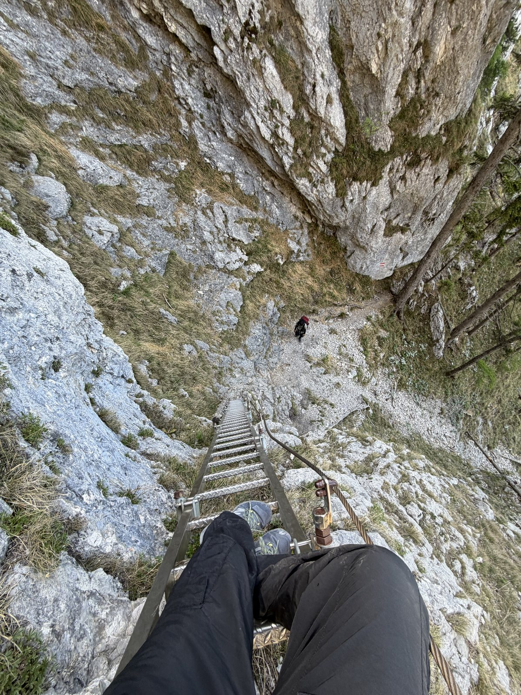
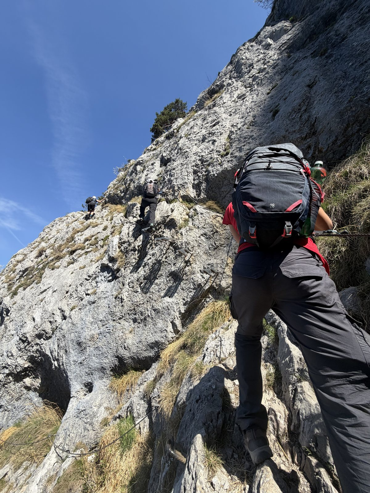
Trail 416
Hernlersteig
A steep route with dramatic views over Traunsee
Hernlersteig climbs the mountain's lakeside face and is known for its exposed passages and impressive views down to Traunsee. It is another serious route, with steep ground and secured sections. The route should not be confused with the separate, more demanding Traunsee-Klettersteig via-ferrata line. Anyone considering a via-ferrata variant needs the correct equipment and the skills to use it.
- A good option only for hikers who are comfortable with steep, exposed mountain terrain.
- Check the official route description carefully so you understand which route or variant you are following.
Trail 412
Mairalmsteig
A forested approach from the other side
Mairalmsteig approaches the mountain from the Lainautal and Kaisertisch side. Its lower section winds uphill through forest, then the terrain becomes steeper and rockier. Higher up, hikers encounter exposed slabs and secured sections before reaching the summit plateau. It is often used as a descent route, but it should not be mistaken for an easy way down: steep rock can be slippery, especially when wet.
- The approach is different from the trails that climb directly above the lakeside access.
- Allow enough time for the forest approach and the rocky upper section.
- Check the route map and trail markings; the entrance is not simply at the same point as every other Traunstein route.
Our route: Naturfreundesteig up, Mairalmsteig down
For our hike, we chose Naturfreundesteig for the ascent and Mairalmsteig for the descent. It made for a varied day: we climbed by one route and returned by another, experiencing different terrain and different sides of the mountain instead of retracing exactly the same path.
We spent around seven hours on the trail in total, including time for eating and resting. That is our experience on the day, not a guaranteed timetable: your time will depend on fitness, conditions, stops and the exact route taken. The descent also deserves attention; being tired does not make the rocky sections any less demanding.
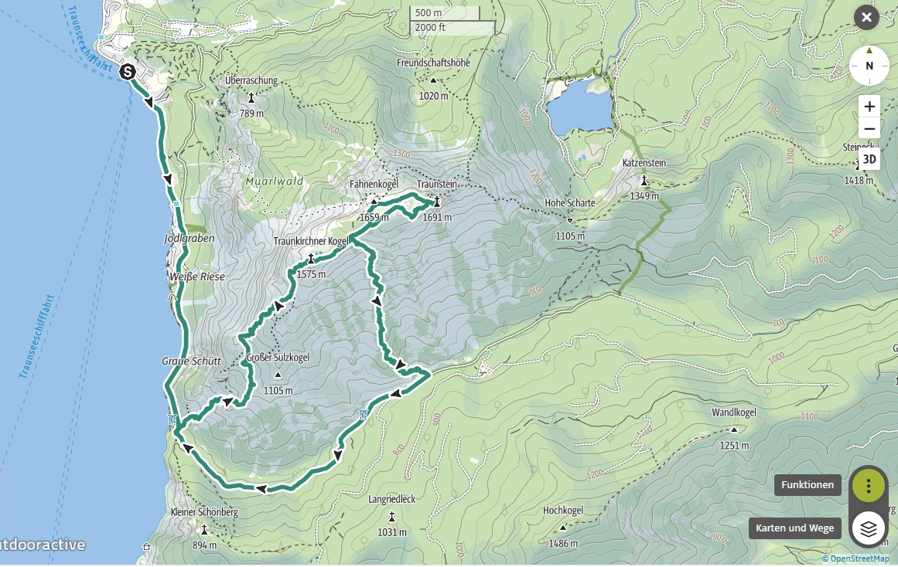
Route reference on Outdooractive
The mountain scenery is a big part of the reward. The higher we climbed, the more the view opened up across the lake and the surrounding peaks. There are moments when it is worth stopping, not only to catch your breath, but to look back and appreciate how far you have climbed.
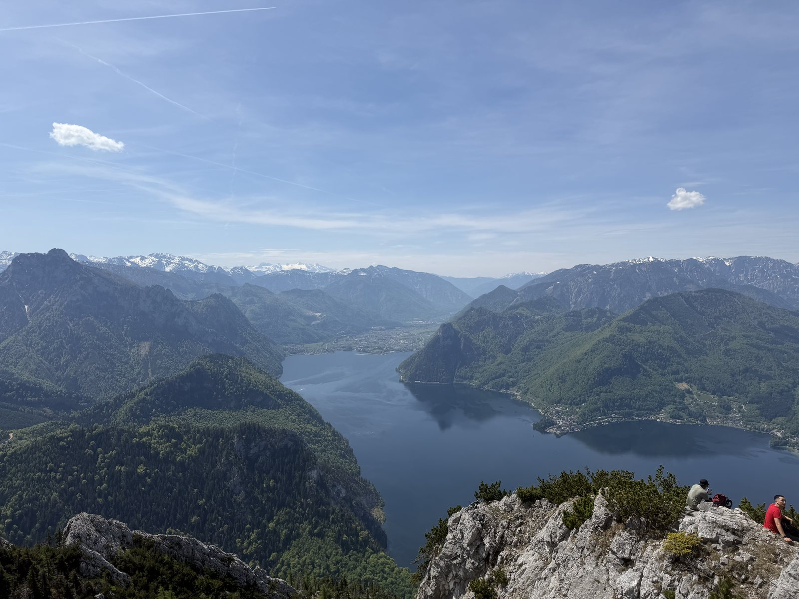
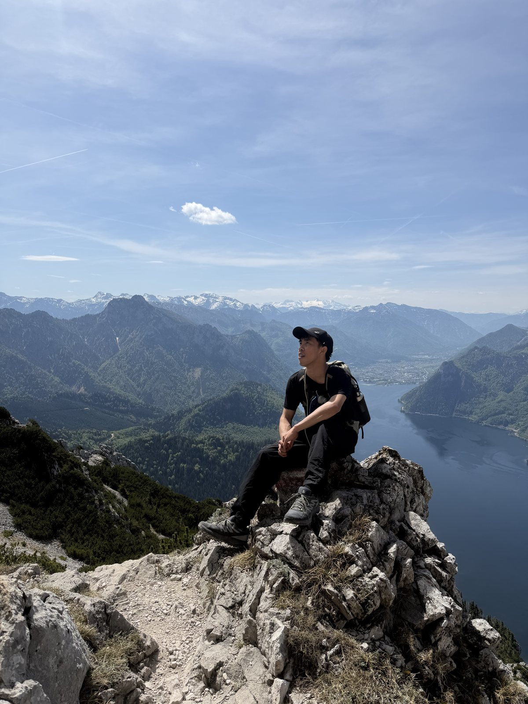
A well-earned stop at Traunsteinhaus
After the climb, we stopped at Traunsteinhaus for food and a beer. It was a lovely place to pause, recover and enjoy the mountain setting. The hosts we met were a welcoming Nepalese couple, and their hospitality added a personal touch to the day. After hours on the trail, a proper meal and a cold drink felt especially rewarding.
Traunsteinhaus is also an option if you would like to turn the hike into an overnight mountain stay. If that appeals to you, book in advance and confirm the hut's current opening dates, room availability, meal arrangements and what you need to bring.
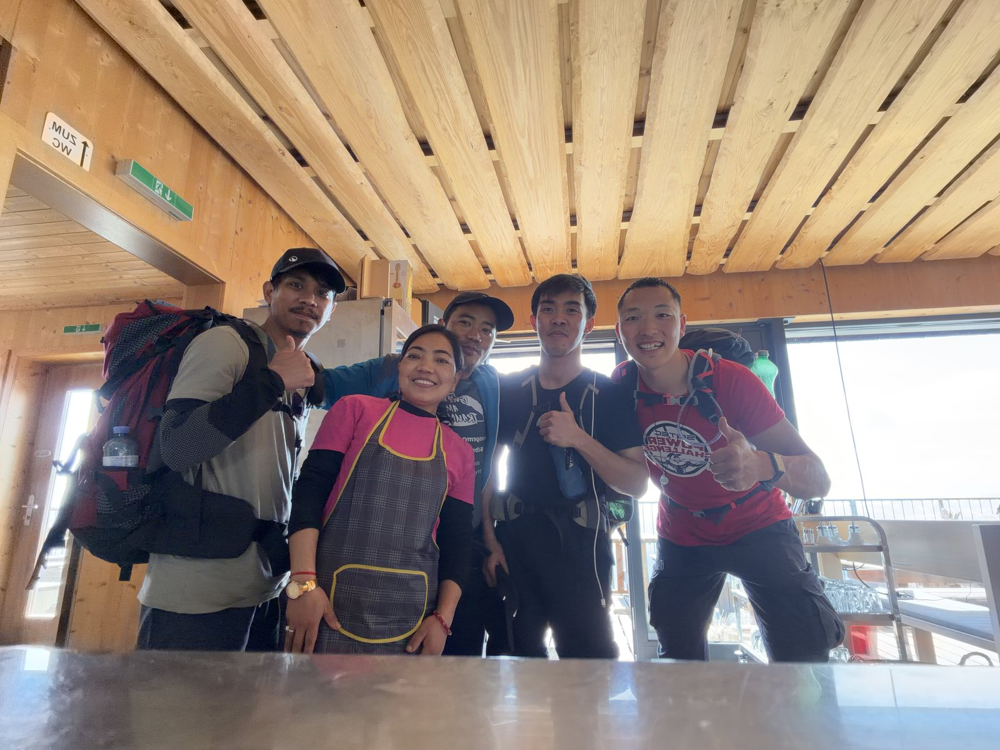
Wildlife and the quiet side of hiking
We also came across wildlife along the trail. Encounters like these are a reminder that the mountain is not just a playground for hikers; it is also a habitat. Keep your distance, avoid feeding or approaching animals, and keep noise to a minimum. Quiet, considerate behaviour helps reduce disturbance and makes the experience better for everyone.
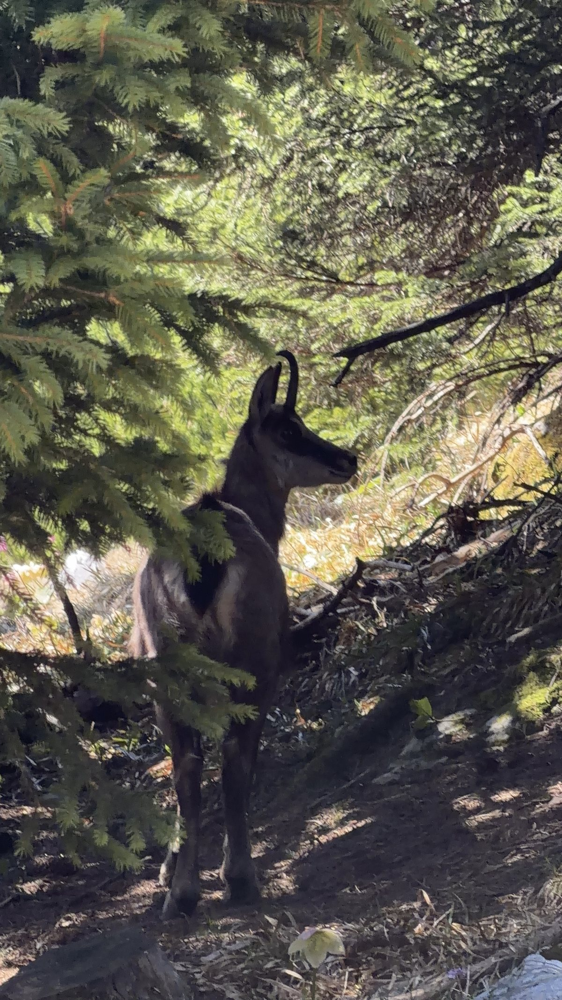
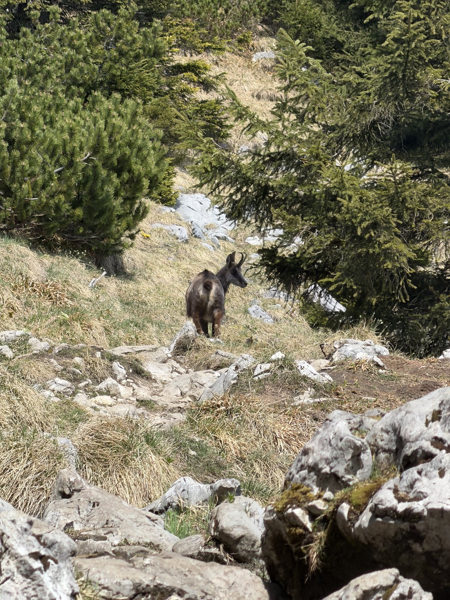
From the mountain to the lake: a swim in Traunsee
We made our way down at around 2 p.m. After the long climb and descent, we headed to Traunsee for a swim. The lake was beautiful, and getting into the water after a demanding mountain day felt like the perfect reward. The contrast was hard to beat: hours among rock, forest and mountain views, followed by a refreshing dip beside the same dramatic peaks we had just climbed.
If you plan to swim after hiking, bring a change of clothes and a towel, check the local swimming access and conditions, and be mindful that mountain lakes can be cold. Do not swim if you are exhausted, unwell or unsure of the water conditions.
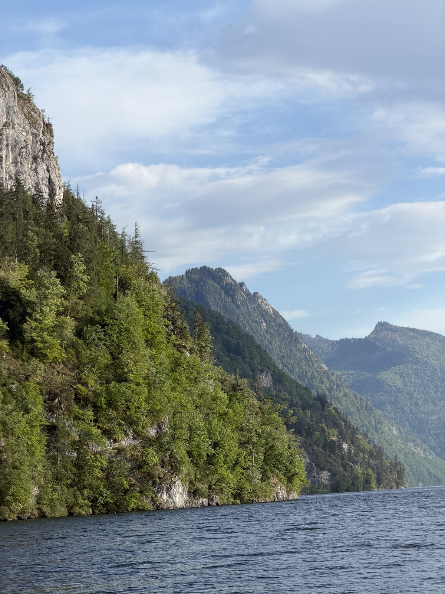
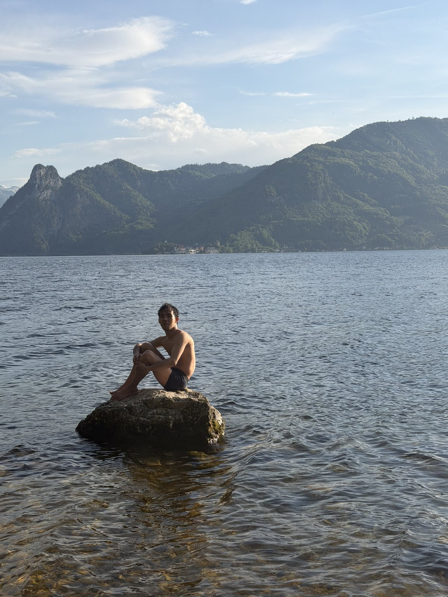
An unexpected kindness on the way back
After our swim, we still had to make our way back towards the train station. We decided to hitchhike, and a kind Austrian woman stopped and gave us a lift directly to the station. It was an unexpected gesture, and one of the most memorable parts of the day. We had spent the day discovering a beautiful place, and then someone we had never met helped us finish the journey with a little generosity.
That small moment stayed with us. Travel memories are not always about famous viewpoints or perfect itineraries. Sometimes they are about the people you meet, the help you receive and the stories you bring home.
Practical planning and safety notes
- Check the weather forecast, trail conditions and any closures on the day. Wet limestone, snow or ice can make exposed routes much more dangerous.
- Start early and allow extra time for breaks, food, navigation and the descent. Our roughly seven-hour day included eating and resting.
- Bring enough water, food, a charged phone, suitable mountain footwear and weather-appropriate layers.
- A head for heights, sure footing and good fitness are important. Fixed cables and ladders are aids, not a substitute for experience.
- For any via-ferrata route or variant, use the required equipment and know how to use it. If uncertain, choose a guided outing or a less exposed route.
- Respect wildlife: keep your distance, do not feed animals and avoid unnecessary noise.
- If you plan to stay overnight at Traunsteinhaus, reserve ahead and confirm current hut information directly.
- For transport, check the exact service date and reserve on-demand shuttles within the operator's booking deadline.
Useful links
Final thoughts
Traunstein gave us far more than a summit to reach. It was a challenging climb, a beautiful mountain hut, wildlife along the trail, a swim in Traunsee and a memorable encounter with a kind local on the way back. If you are travelling through Upper Austria and enjoy serious mountain hikes, this is a place worth considering, provided you prepare properly and choose a route that matches your experience.
For us, the best part was how the whole day came together. We arrived for a hike and left with a story that included a mountain, a lake, good food and the kindness of a stranger. That is the kind of travel day I want to remember.
More from the day
Tap a photo to see it full size.
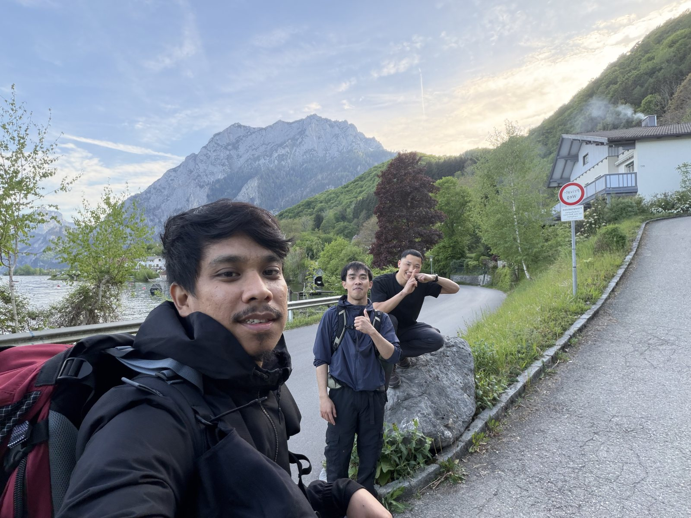
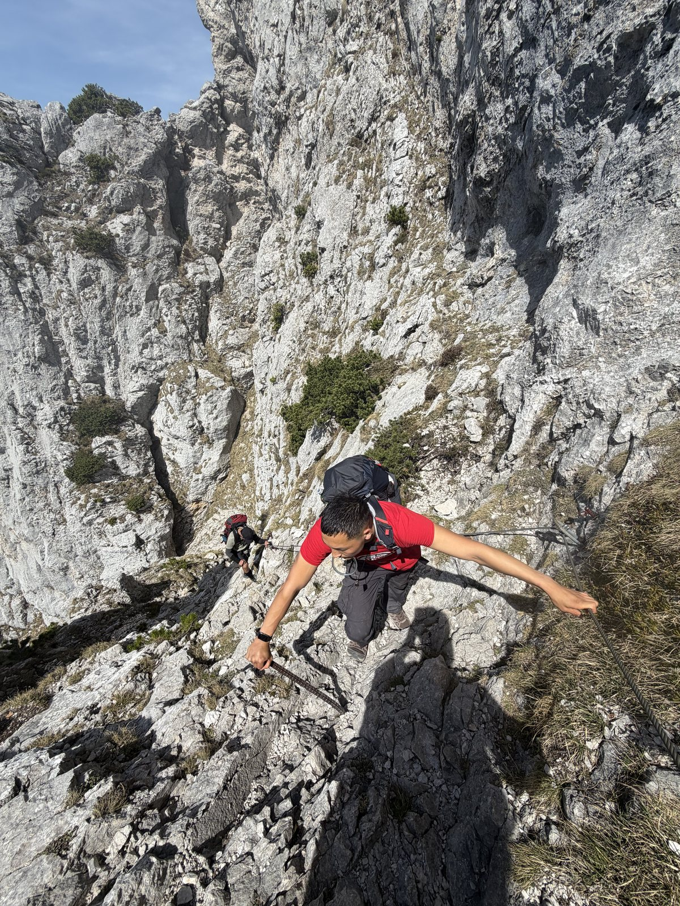
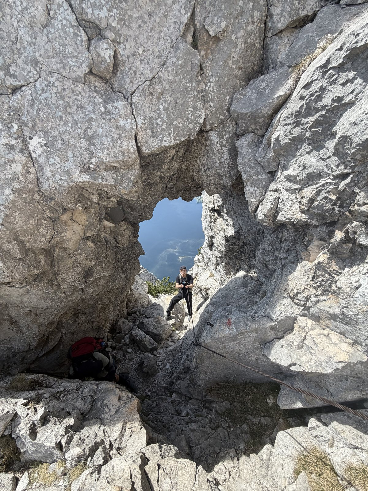
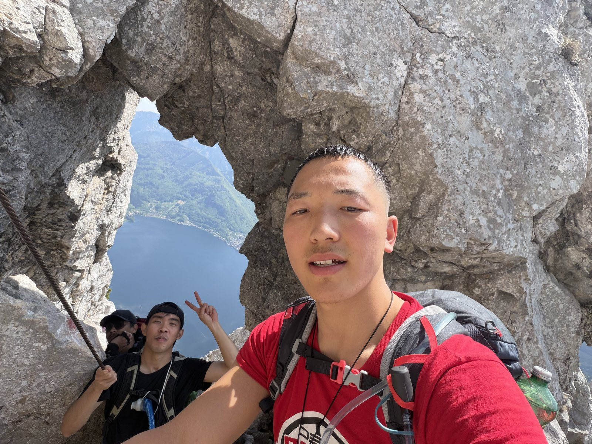
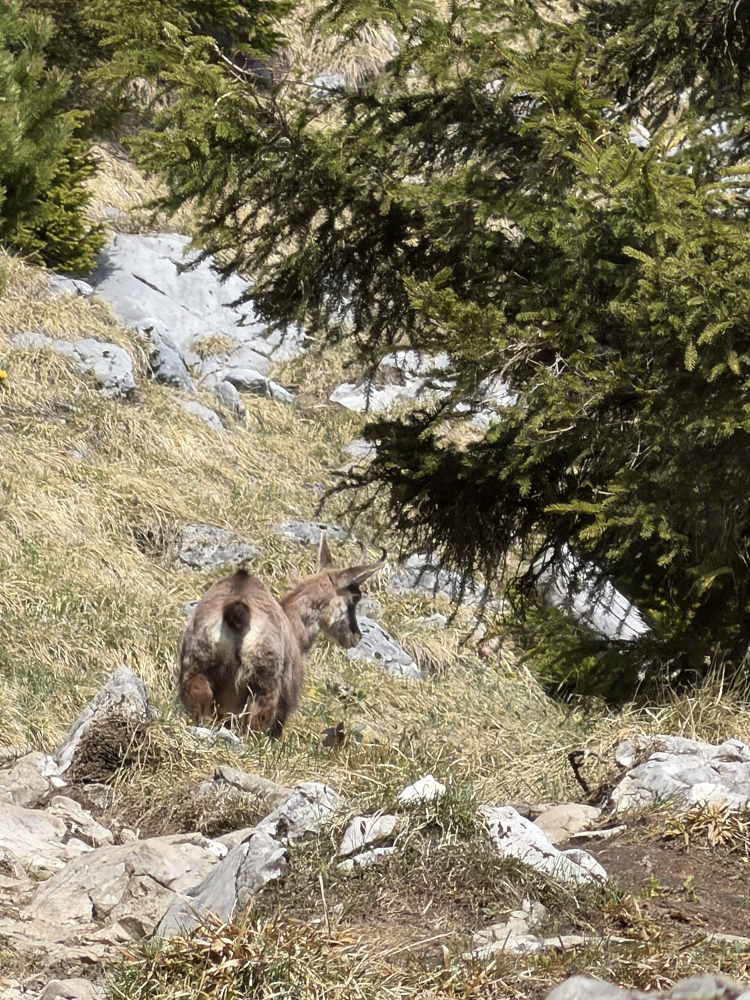
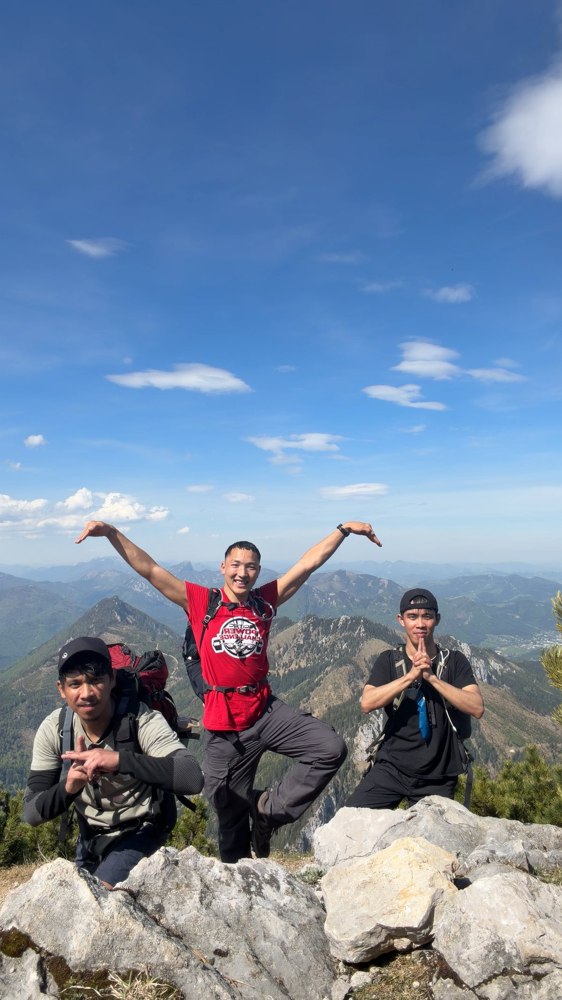